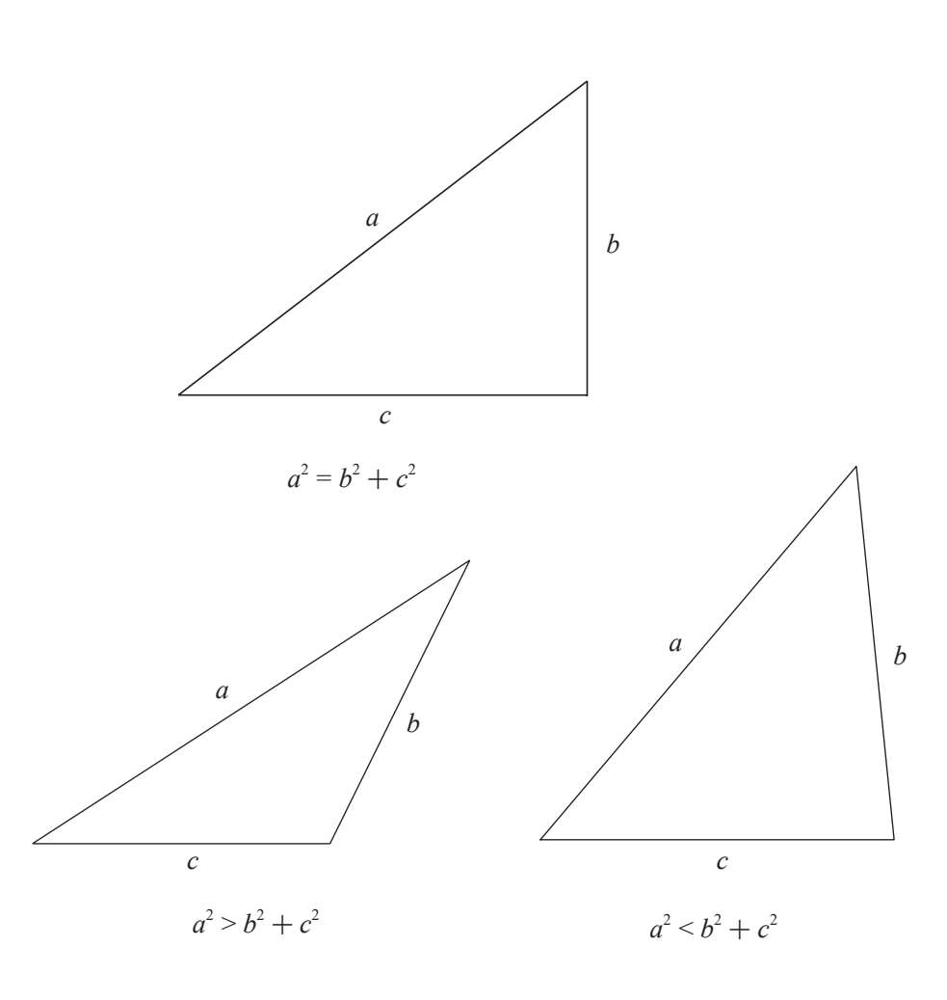
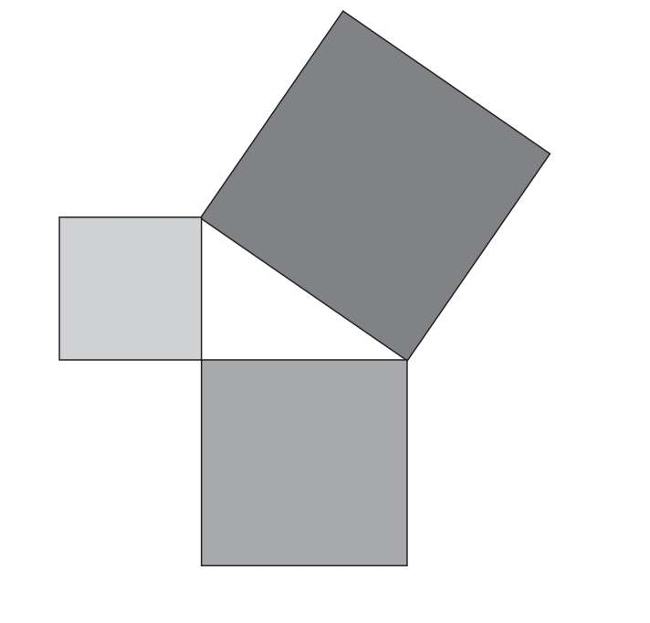
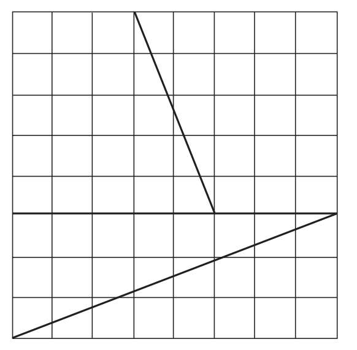
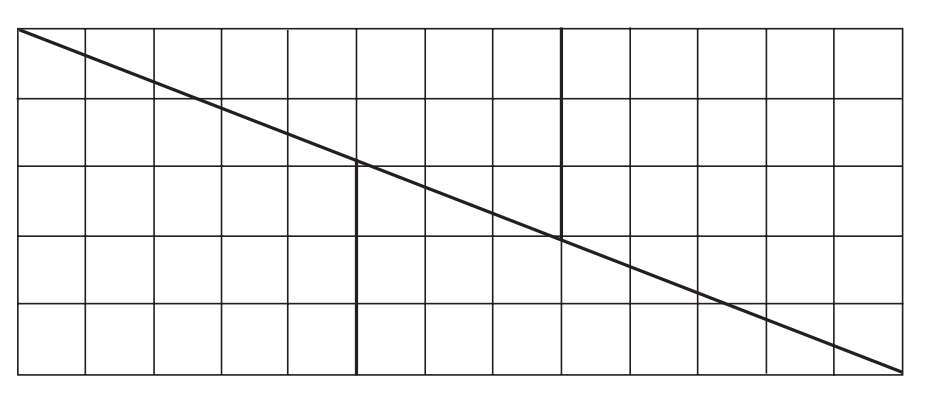
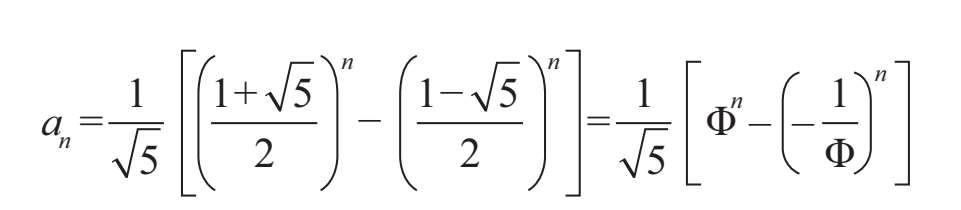
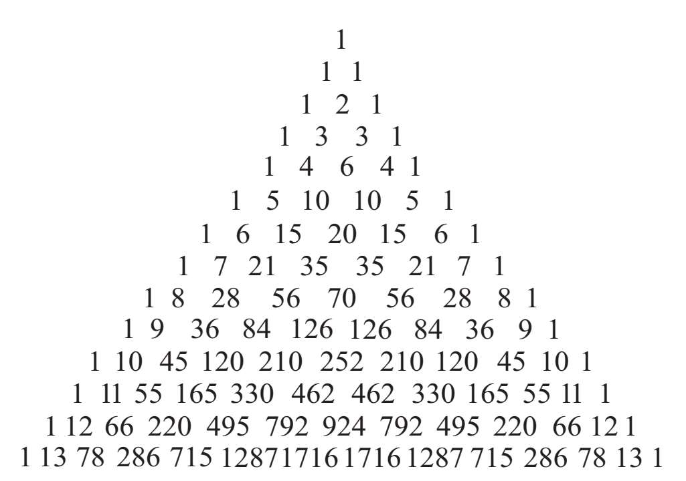
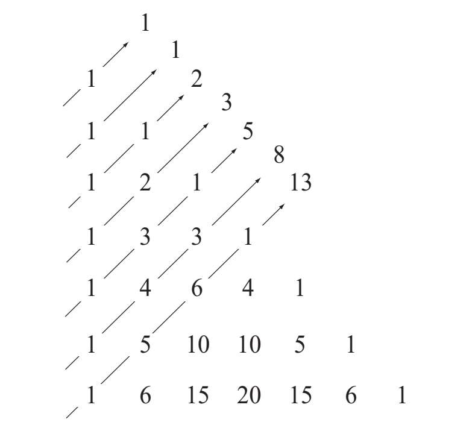

前面已经讲过，通过算出斐波那契数列中相邻项之比，我们就能够求出无限接近黄金比例的近似值。然而除了预测兔子数量的增长，斐波那契数列还意外地出现在了其他数学家的研究中。下面让我们看一下这个数列更加神奇之处。
斐波那契数列的各项之和
如果我们从斐波那契数列中任选十个连续项并将它们相加，得到的和总是11的倍数。以前十项为例，它们的总和为：
1+1+2+3+5+8+13+21+34+55=143=11·13
同样的情况也出现在了：
21+34+55+89+144+233+377+610+987+1 597=4 147=11·377
这还不算完。每一个总和恰好等于11乘以连续项中的第七项，第一个例子中的第七项是13，第二个例子中的是377。
除此之外，斐波那契数列还有一个奇妙的特点。如果我们始终从首项开始算起，那么任意（n个）连续项之和等于第n+2项减去首项。我们还是以数列的前十项为例，它们相加之和为143。143等于第十二项（144）减去首项（1）。数列前十七项的总和为4 180，这个结果等于第十九项（4 181）减1。
用公式可以表示为：
1+1+2+3+5+……an=an+2-1
我们可以利用这个性质来计算任意个连续项之和，这在外行看来非常不可思议。举例来说，任选两个数25和40，分别将它们代入刚才的公式替换n：
1+1+2+3+5+……a40=a42-1
1+1+2+3+5+……a25=a27-1
想要算出a25到a40之间各项之和，只需要把前面的两个表达式相减：
a26+……+a40=a42-a27
我们现在已经掌握了这个小窍门：在斐波那契数列中计算任意两项之间的各项之和，只要分别求出这两项的第n+2项，然后相减就可以了。
毕达哥拉斯三元数组
虽然毕达哥拉斯三元数组（Pythagorean triples）有无数个，但是想要找到它们却并不容易。而你肯定猜到了斐波那契数列的另一个用处，没错，它可以帮助我们找出三元数组。我们会在这一部分中看到具体的方法，但首先需要弄清楚斐波那契、毕达哥拉斯、黄金比例三者之间的关系。
马里奥·梅茨（1925—2003）
意大利艺术家马里奥·梅茨是贫穷艺术运动中最杰出的人物之一，他在20世纪70年代创作的许多作品中反复使用了斐波那契数列。他的风格多变，善用一系列不同的材料（霓虹灯、树枝、兽皮、报纸）。在斐波那契数列中，前两项相加让后一项不断增大，直至无穷大。正是由于这个特点，梅茨才利用著名的斐波那契数列来象征艺术和社会的进步。文明发展的每一步都是过去历史的汇总，让过去成为一个整体，成为未来的重要组成部分。同样，当代艺术也是过去艺术的积累，所有的一切都不是凭空而来。
那不勒斯地铁站里的斐波那契螺线，马里奥·梅茨设计。
人类最著名的数学证明就是毕达哥拉斯定理：在任何直角三角形中，长边（斜边）的平方等于其他两边（有时称为“直角边”）的平方和。
a2=b2+c2 （T）
从几何学的角度来看，我们可以认为直角三角形的三条边分别来自三个相连的正方形。每个正方形的面积等于三角形中对应边的平方（因为正方形的各边相等）。毕达哥拉斯定理只说明了在直角三角形中，两条直角边所在的正方形的面积相加（两条直角边的平方和）等于斜边所在的正方形的面积。
这个公式让我们不用测量角度就可以辨别三角形。我们只需要把三条边分别平方，然后比较长边的平方和另外两边的平方和。如果二者相等，那它是直角三角形。如果两边的平方和小于长边的平方，那它是钝角三角形（最大角超过90°）。如果两边的平方和大于长边的平方，那么它是锐角三角形（三个角都小于90°）。
当一个直角三角形的各边为整数时，这三个数字就组成了毕达哥拉斯三元数组。换句话说，毕达哥拉斯三元数组由三个整数（a，b，c）组成，这组数字满足：
a2=b2+c2


如果我们根据直角三角形的每一条边画一个正方形，那么大正方形面积总是等于两个小正方形的面积之和。
现在我们要演示的方法就是通过斐波那契数列找出毕达哥拉斯三元数组。从斐波那契数列中任选四个连续项，比如数字2、3、5、8。通过这4个数又可以求出另外3个数：
1.左右两边数的乘积：2·8=16
2.中间两数的乘积再乘以2：2·（3·5）=30
3.中间两数的平方和：32+52=34
通过证明我们可以很容易地发现，（34，30，16）构成了毕达哥拉斯三元数组：
162=256，302=900，342=1 156⇒256+900=1 156
这个方法适用于斐波那契数列中任意连续的四项。
三元数组的应用
（5，4，3）是人们最熟悉的毕达哥拉斯三元数组，在整数中，它构成的直角三角形各边最短。该三元数组的关系如下：
32+42=52
历史上，人们曾用打结的绳子来表示这个直角三角形的各边。我们可以从埃及法老时代留存下来的一些图画中看到手拿这种绳子的人。当时的人用这样的绳子做什么？据说他们在地上把绳子摆成三角形，利用绳结来限定各角。这样，三角形各边的比例为3:4:5。只要是符合这一要求的三角形都是直角三角形。
利用打结的绳子可以快速地摆出一个直角（90°）。在埃及，每年尼罗河的洪水退去后，人们用这种绳子在泥泞的堤岸上划出纵横交错的垂线，这样就能确定矩形地块的位置。切割埃及纪念建筑所用的石头时同样需要这种绳子。实际上，这些简单的绳子及其构成的直角三角形将数学应用在了生活的各个方面。
斐波那契数列各项之间的关系
在斐波那契数列中，我们同样可以知道三个连续项之间的关系。任选三个连续项，把第一项和第三项相乘，将乘积与第二项的平方相减。两者之间总是相差1，至于是正数还是负数取决于选择的项。举例来说，如果选择的三项为3、5、8，3·8=52-1，差为-1。如果三项为5、8、13，5·13=82+1，差为1。
通常，我们可以将斐波那契数列中连续三项的关系总结为：
an2-an-1·an+1=（-1）n-1
三元数组与费马大定理
费马大定理是历史上最热门的数学猜想之一。350多年来，这个数学谜题一直令人痛苦万分，直到1995年，英国数学家安德鲁·怀尔斯才证明了这个定理。它与毕达哥拉斯和毕达哥拉斯三元数组有着直接的关系。费马大定理以毕达哥拉斯三元组方程a2=b2+c2为出发点，声称如果我们用任意其他整数取代指数2，方程绝不会有正整数解。也就是说当n>2时，不存在满足an=bn+cn的三元数组。
如果我们用几何的方法来表示这种关系，结果会令人相当困惑。首先绘制一个8×8的正方形网格（包含82=64个小正方形），然后像下图那样将正方形网格分成四部分，接下来像拼七巧板一样将它们重新拼接成一个长13方格、宽5方格的长方形。但是请仔细看一下，这个长方形包含的方格总数为13·5=65个。多出的一个方格是哪来的？为了弄明白这一点，我们必须注意分割正方形的线所构成的夹角。当我们拼接新图形时，它们的角度并不完全相同，因此无法形成一个标准的矩形。角和角之间留下了微小的空隙，这些空隙的总面积恰好等于那个看似凭空多出来的方格。


斐波那契数列的通项
斐波那契通过递归算法定义了斐波那契数列。1843年，法国数学家雅克·比奈找出了斐波那契数列的通项公式。通项公式为：

在斐波那契数列中，相邻项之比组成了新的数列，而该公式证明了这个数列的极限为黄金比例。
帕斯卡三角与斐波那契数列
帕斯卡三角是最有名的数字排列规律之一。帕斯卡通过这个规律发现了二项式定理，但是中国的科学家杨辉和12世纪的波斯数学家奥马尔·海亚姆知道该定理的时间要早于帕斯卡。
帕斯卡三角的构成如下：首行（第零行）为1。接下来的每一行都比上一行多一个数字，每个新的数字都是它上方的左右两个数字相加之和（如果某个数字的左上方或右上方没有其他数字，则用0来代替）。这个定义强调了帕斯卡三角与斐波那契数列之间的关系，而且与斐波那契数列的定义十分相似。通过这两个相似的定义，我们完全可以认为帕斯卡三角与斐波那契数列有着直接的数字关系。下面要做的就是将帕斯卡三角的每一行左对齐，并且上下对齐每一个数字，然后将每条斜线上的数字相加（见下页图），这样就得到了斐波那契数列（1，1，2，3，5，8，……）。


布莱瑟·帕斯卡（1623—1662）
法国人布莱瑟·帕斯卡凭借自己非凡的能力探索了许多领域。1654年，帕斯卡遭遇了一场马车事故，虽然身体没有受伤，但心理上却发生了变化。
他因此远离社会大众并皈依了宗教，致力于哲学与神学的研究。他是一位杰出的作家，同时对物理学做出了重要贡献。帕斯卡研究了当时鲜为人知的概念，比如大气压和真空。他发明了液压机和注射器，还发明了机械计算器（有各种不同的叫法，统称为加法器）。他在数学方面的贡献让人印象尤为深刻，特别是概率论。
帕斯卡指出，二项式（a+b）的同底数连续幂分别展开后，它们的系数可以排列成行，形成一个由数字组成的三角形。现在人们将这个三角形命名为帕斯卡三角，关于帕斯卡三角我们会在后文进一步详述。
（a+b）4=a4+4a3b+6a2b2+4ab3+b4
从第一项到最后一项的系数分别是1、4、6、4、1，对应的是帕斯卡三角的第五行。
斐波那契数列中的质数
斐波那契数列含有许多奇特的性质。举例来说，如果数列中an的值是质数，那么n也是质数。然而相反的情况并不总是遵循这一规律。比如，设n=19（质数），则an=4 181=37·113（非质数）。
如果我们观察一下该数列中的质数，还会发现一个尚未被证明的假设：斐波那契数列中有无数个质数。直到今天还没有人能够证明它是真是假。
质数
只能被1和自身整除的自然数被称为质数。除了1和自身外还能被其他数整除的自然数称为合数。举例来说，7、13、23是质数，32（可以被2、4、8、16整除）是合数。任何大于1且不为质数的自然数都可以分解为有限个质数的乘积，可以说，质数是这些非质数自然数的“基础”，质数的名字便由此而来。